Хоримия
«Хоримия» (Horimiya) — японский аниме-сериал в жанре романтической повседневной школьной комедии, созданный на основе одноимённой манги. Премьера состоялась в январе 2021 года.
Описание
Сюжет
В центре сюжета — история двух старшеклассников: популярной и внешне жизнерадостной Кёко Хори и тихой и сдержанной Идзуми Миямуры. Вне школы они являются полной противоположностью своим публичным образам. Кёко Хори — яркая и популярная в школе девушка, но дома она ответственная девушка, которая занимается заботой о младшем брате и всеми домашними делами. Идзуми Миямура — скромный и замкнутый парень, который в школе держится осторожно. Вне школы он носит пирсинг, а под школьной формой прячет татуировки. Случайная встреча после школы приводит к тому, что герои раскрывают тайны друг друга. Со временем они начинают общаться как друзья, а позже их отношения перерастают в роман. Параллельно в сюжете раскрываются истории второстепенных персонажей — их семейные обстоятельства, учебные тревоги, личные переживания.
Особенности
Темпоритм и раскрытие быта. Романтическая завязка способствует раскрытию новых граней быта. Отсутствие избыточных сюжетных линий. Характерная черта «Хоримии» — отказ от нагромождения побочных линий, что сделало её одним из заметных жанровых тайтлов. Медитативная конструкция. Спокойные тона, светлые кадры, уютные сцены из повседневной жизни создают ощущение домашнего тепла. Акцент на эмоциях. В аниме хорошо показаны переживания молодых людей, их стыд, горе, грусть, страх.
Производство
Студия: CloverWorks. Режиссёр: Масаси Исихама.
Герои
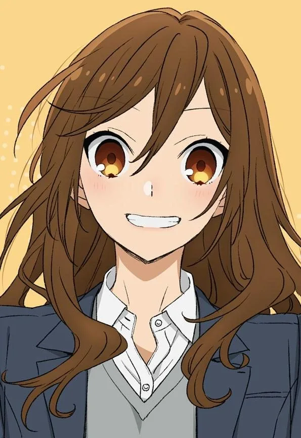
Кёко Хори
Кёко — красивая и милая девушка с каштановыми волосами. Она энергичная и популярная девушка в возрасте 17 лет, та, кто всегда создает вокруг себя счастливую атмосферу. Она трудолюбива во всех сферах жизни. Когда она нервничает, девушка становится склонна к насилию. Встречается с Изуми Миямура, очень ревнивая девушка.
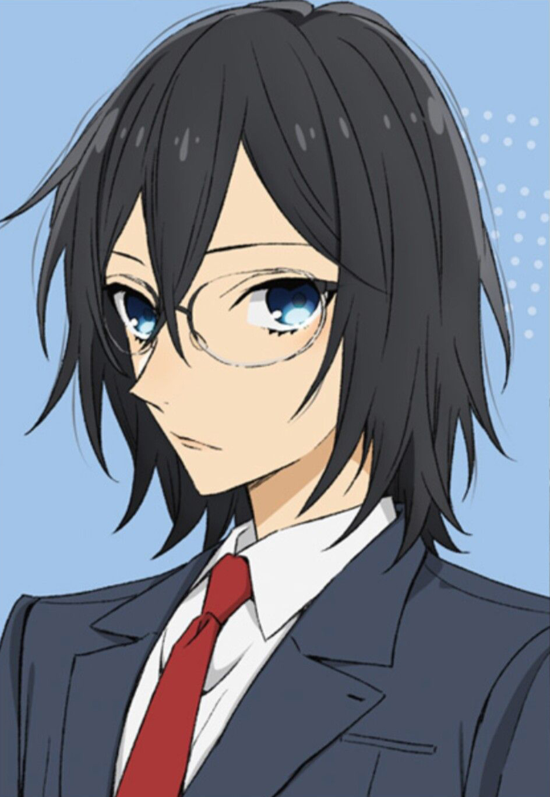
Изуми Миямура
Изуми, изначально, тихий, мрачный и антиобщительный человек в возрасте 17 лет. Одноклассники думают, что он отаку, к которому сложно подойти и о чём-то поговорить. Общаясь с большим количеством своих одноклассников, Изуми становится хорошим другом и заботливым человеком, который стремится помочь другим. Встречается с Кёко Хори.
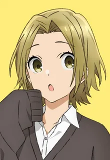
Юки Йошикава
Юки - невысокая стройная 17-летняя девушка со светлыми оливково-зелёными волосами. Лучшая подруга Кёко Хори. У Юки игривый характер. Она почти всегда ведёт себя наивно и по-детски. С ней легко общаться, поэтому она легко может завести друзей. Однако Юки часто пытается скрыть свои негативные чувства, особенно перед друзьями, делая вид, что у неё всё хорошо и её не волнует какая-либо ситуация. Влюблена в Тору Ишикава.
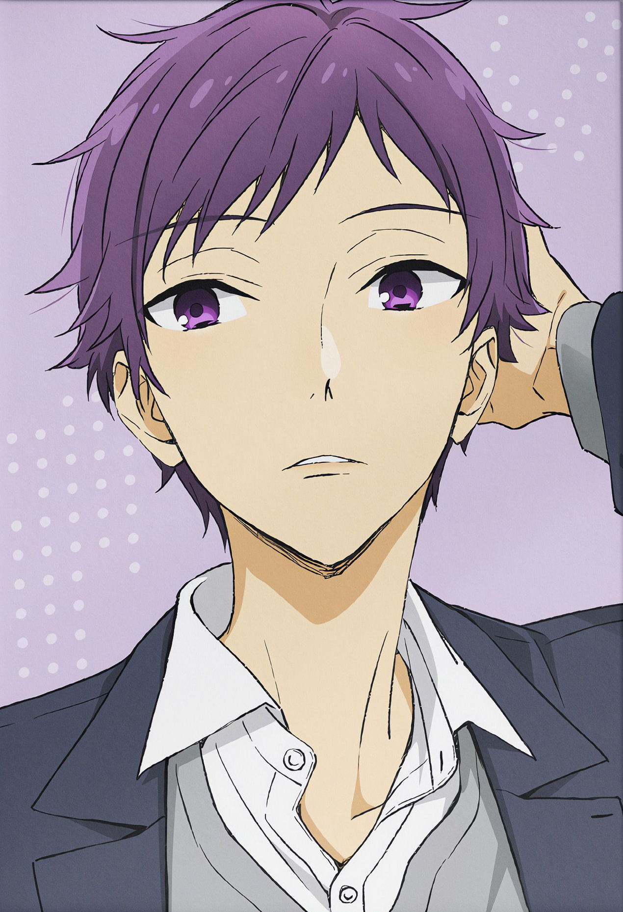
Тору Ишикава
Тору - высокий 19-летний юноша со спортивным телосложением и бледной кожей.Тору может быть вспыльчив, он ударил Миямуру, когда тот продолжал отвергать мысль о том, что Хори влюблена в Миямуру. Однако он сожалел о том, что потерял контроль над собой. В конечном итоге он становится одним из близких друзей Миямуры и принимает тот факт, что они с Хори встречаются, хотя Тору любил Хори. Его единственная странность - сны.
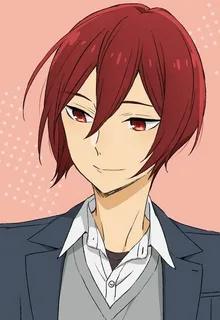
Какэру Сэнгоку
Сэнгоку - президент студенческого совета, парень 17 лет. Довольно застенчивый юноша. Он очень слаб, любая вещь заставляет съежиться его от страха, особенно, когда дело касается насекомых или ужаса. Сэнгоку очень умен, серьезен. Он любит читать и обладает хорошим уровнем концентрации, игнорируя все, что происходит вокруг него. Какэру почти не выражает эмоций. Встречатся с Рэми Аясаки
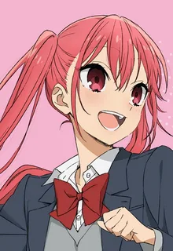
Рэми Аясаки
Рэми Аясаки - 18-летняя девушка, член студенческого совета и девушка Какэру Сэнгоку. Обычно Рэми ведет себя по детски и незрело. У неё прямолинейный характер, и она часто полагается на чью-то помощь. К тому же она не очень умна, и её часто сравнивают с Миямурой. Также она говорит о себе в третьем лице. Лучшая подруга Сакура Коно.
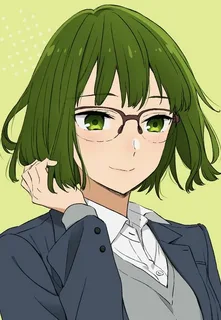
Сакура Коно
Сакура Коно - вице-президент студенческого совета. Сакура - разносторонний, добрый и ответственный человек. Она очень трудолюбива и всегда следит за тем, чтобы студенческий совет выполнял свои обязанности. Она довольно прямолинейна, поскольку не хочет признавать того, что влюблена в Тору. Сакура — неуверенная в себе девушка, что в какой-то момент может выразить зависть своей подруге Рэми, которую в отличие от себя считает милой. Однако её неуверенность - это то, с чем она постепенно соглашается и начинает любить себя такой, какая она есть.
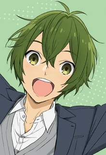
Шу Иура
Шу - шумный и общительный парень 17 лет. Он любит подшучивать над людьми и первым начинать игры или мероприятия, проводимые группой. Из-за чего другие считают его раздражающим. Вероятно из-за его раздражающе шумного характера, девушки просто начинают боятся и сторонится его. Дома он совершенно другой, так как ведет себя совершенно подавленно и холодно по отношению к своей младшей сестре Мотоко. Но несмотря на холодное отношение, он по прежнему любит её и пытается помочь всем, чем может.
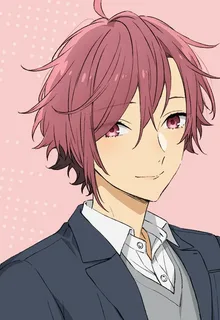
Аканэ Янаги
Янаги - нежный юноша 17 лет, который не хочет никого потерять. Он замкнут в себе, из-за чего иногда его считают безличным, поэтому он хочет быть близким со всеми. Он вежливо разговаривает с другими и хочет быть с ними в хороших дружеских отношениях. Ему очень плохо по утрам, поскольку он все ещё полусонный, его личность - полная противоположность. Он становиться чрезвычайно грубым и жестоким, настолько, что другие задаются вопросом, есть ли у него раздвоение личности.
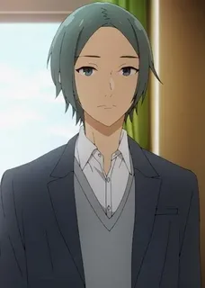
Дайки Мизоучи
Дайки Мизоучи - парень 18 лет, один из одноклассников Кёко Хори и Идзуми Миямуры. Мизути плохо умеет выражать свои мысли. И постоянно хмурится.
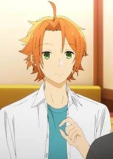
Коичи Шиндо
Коичи Шиндо - лучший друг Изуми Миямуры и парень Чики Ичиджо, 17 лет. Коичи очень добрый и оптимистичный человек. Сначала он был очень забывчив, и ему потребовалось много попыток, прежде чем он правильно произнес имя Миямуры. Коичи - это человек, который, по мнению Изуми, изменил его, чтобы он мог свободно оставаться самим собой среди других.
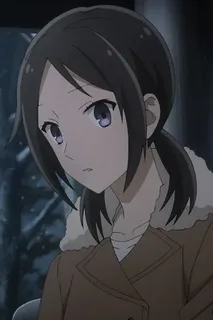
Чика Ичиджо
Чика Ичиджо - третьекурсница старшей школы Ясака и девушка Коичи Шиндо. Чика тихая, скромная и сдержанная девушка, особенно среди людей, с которыми она не знакома. Обычно она стоит в стороне, пока Шиндо разговаривает со своими друзьями. Обычно Чика открыто только с близкими к ней людьми, такими как Миямура и Танихара. Она много ест, необычно сочетая различные продукты, такие как натто с сыром.
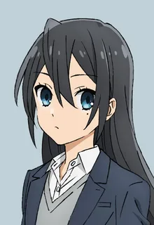
Хонока Савада
Хонока Савада - девушка, чья внешность схожа с Миямурой. Она влюблена в Хори. Савада упорно относится к Кёко. Из-за своей привязанности к ней она часто злится, когда Хори находится рядом с Изуми Миямурой, и пытается оттолкнуть его. Она рассматривает Миямуру как противника в любви, но также считает его своим старшим братом, который скончался несколько лет назад. У неё также есть небольшая андрофобия - она часто мерзнет, убегает или прячется, когда к ней подходят юноши. Однако с тех пор, как она познакомилась с Миямурой, она начала прятаться за ним, чтобы избежать разговора с мальчиком.
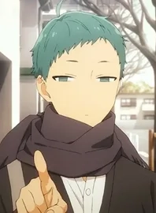
Макио Танихара
Макио Танихара - третьегодка старшей школы. Танихара - несколько сквернословящий и грубый парень с историей издевательств над другими, в частности над Миямурой. Однако в ситуациях, когда ему некомфортно, он становится сдержанным и склонен усваивать свои мысли, позволяя другим действовать первыми. Позже подразумевается, что его поведение вызвано неуверенностью в себе, вытекающей из потребности вписаться в общество своих друзей. После сна с участием Миямуры он начинает размышлять о своих ошибках и стремится загладить их.
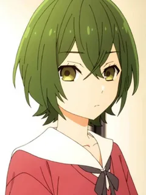
Мотоко Иура
Мотоко Иура - младшая сестра Шу Иура. Мотоко, которую она сама описывает как неразговорчивую и угрюмую, — полная противоположность Шу Иуре. Она предпочитает держаться особняком и с трудом заводит друзей. Однако, в отличие от Шу, она ведет себя так же и в школе, хотя по отношению к брату она гораздо более настойчива и агрессивна, чем с другими. Она довольно умна, но ей не хватает уверенности, чтобы использовать свои способности.
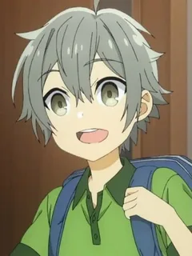
Сота Хори
Сота Хори - младший брат Кёко Хори. Миямура впервые встречает его, когда на него нападает собака и отводит домой, видя скрытую сторону Кёко. Сота - послушный ребенок в близких отношениях с сестрой. Он любит Миямуру и уважает его, рассматривая в нем фигуру старшего брата. Впервые встретив Миямуру, он описывает Соту как «умного» из-за того, что тот смог запомнить свой адрес.
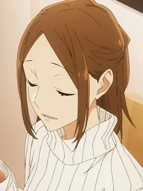
Юрико Хори
Юрико Хори - жена Кёскэ Хори и мать Кёко Хори и Соты Хори. Юрико - нежная и заботливая мама, ленива на кухне. Из-за того, что Юрико очень занята на работе, она редко бывает дома. Из-за чего Кёко берет на себя ответственность за заботу о Соте.
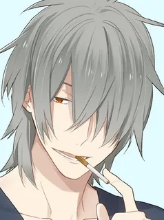
Кёске Хори
Кёске Хори - муж Юрико Хори и отец Кёко Хори и Соты Хори, изредка бывающий дома из-за работы. По словам Кёко, Кёскэ - грубый, эгоистичный, сильный человек, который шутит на серьезные темы и видимо, любит уходить из дома на долго. Он не любит тратить много денег, это было видно, когда его семья попросила съесть белугу или суп из акульих плавников, он категорически им отказал. Он может быстро изменить настроение к происходящему. Например, при виде Миямуры, его усталое поведение мгновенно изменилось на счастливое.
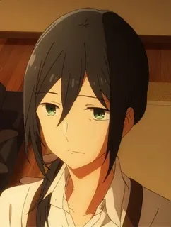
Иори Миямура
Иори Миямура - жена Наодзуми Миямуры и мать Идзуми Миямуры. Иори добра и мягка со всеми, кроме Идзуми Миямуры, с которым она строга. Как владелица и управляющая кондитерской семьи Миямура, она особенно строга с Идзуми, когда дело касается работы, и часто заставляет его помогать в магазине. Однако она очень добра к друзьям Идзуми, угощает их тортом и разрешает Коити Синдо оставаться у них почти всегда, когда он просит.
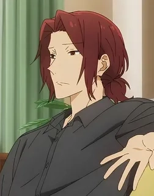
Шин Ясуда
Шин Ясуда - красивый, но крайне извращённый учитель английского старшей школы. Он ведёт английский, а также возглавляет студенческий совет. Ясуда любит старшеклассниц и даже не пытается это скрывать. Однако на самом деле он никогда не прикасается к девушкам, но проявляет к ним чрезмерную дружелюбность, в то время как с юношами ведёт себя чрезмерно холодно.
Сезоны
Сезон 1
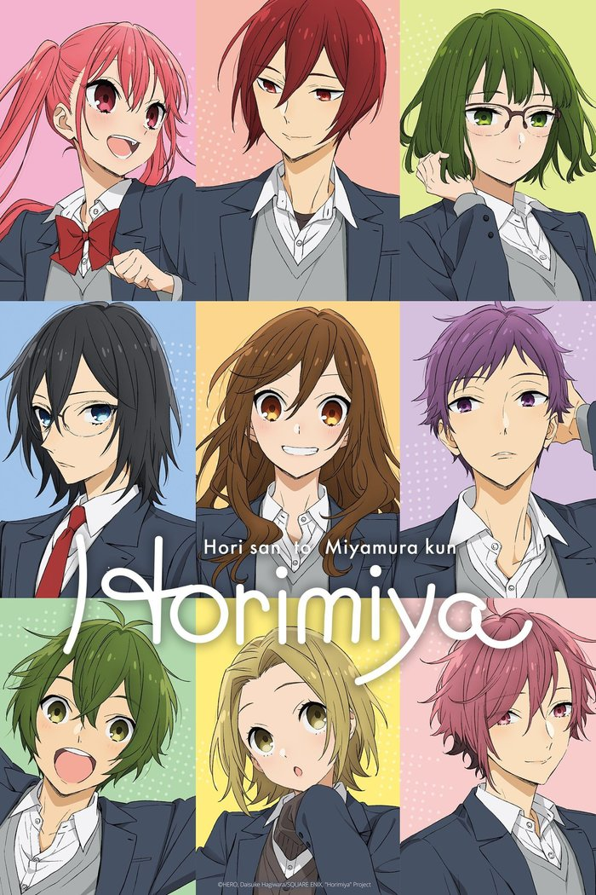
В первом сезоне рассказывается о двух старшеклассниках с «двойной жизнью». Кёко Хори — популярная и общительная ученица в школе, но дома она ведёт хозяйство и заботится о младшем брате, скрывая это от одноклассников. Её одноклассник Идзуми Миямура кажется замкнутым «ботаником» в очках, однако вне школы носит пирсинг и татуировки — и тоже держит это в секрете. Их пути пересекаются, когда Миямура помогает младшему брату Хори и приводит его домой: так герои узнают истинные лица друг друга и договариваются хранить тайны.
Постепенно между ними завязывается дружба, которая перерастает в романтические чувства. По ходу сезона они преодолевают недопонимания и ревность (в т. ч. из‑за признаний других персонажей), укрепляют доверие и учатся быть собой. К финалу Хори и Миямура официально становятся парой, а вокруг них складывается дружный круг друзей. Сезон состоит из 13 серий и завершается на позитивной ноте — герои взрослеют, принимают себя и друг друга.
Сезон 2 "Кусочки"
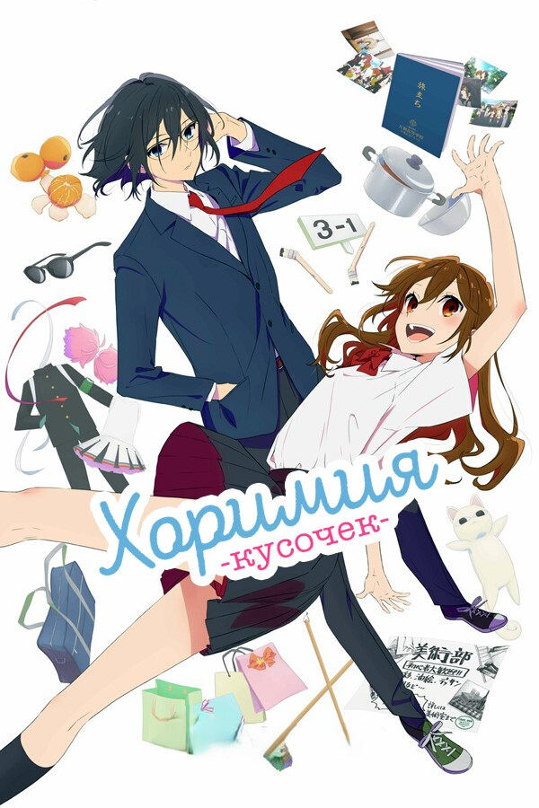
Второй сезон аниме «Хоримия: Недостающие фрагменты» (Horimiya: The Missing Pieces) состоит из 13 серий и вышел в 2023 году. Он не продолжает основную сюжетную линию, а дополняет первый сезон — в его основу легли неэкранизированные главы оригинальной манги. Действие происходит в последний год обучения героев в школе. В центре повествования остаются Кёко Хори и Идзуми Миямура, но акцент смещается с романтической линии на повседневные ситуации и раскрытие персонажей. Из‑за множества скачков во времени сюжет может казаться фрагментарным.
Среди ключевых событий — поездка класса в Киото (в первой серии Миямура переживает, что его татуировки привлекут внимание), кулинарные мастер‑классы, вечеринки с ночёвкой, классные экскурсии и сцена знакомства родителей Кёко Хори. Последняя серия предлагает альтернативный взгляд: в ней авторы фантазируют о том, что было бы, если бы события, сблизившие главных героев, не произошли.
Моменты
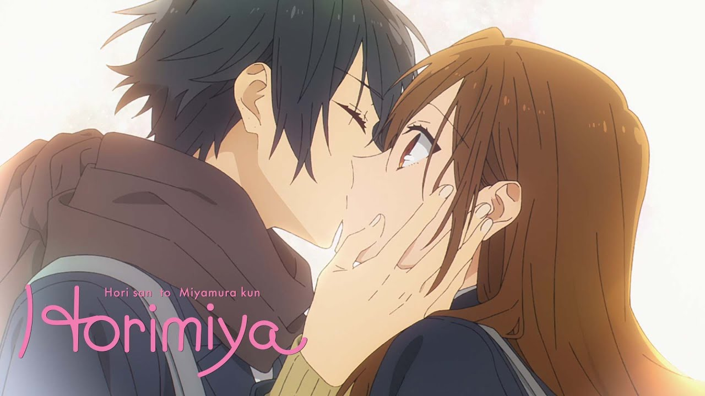
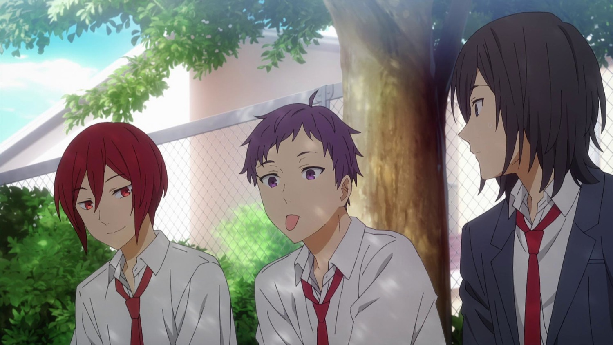
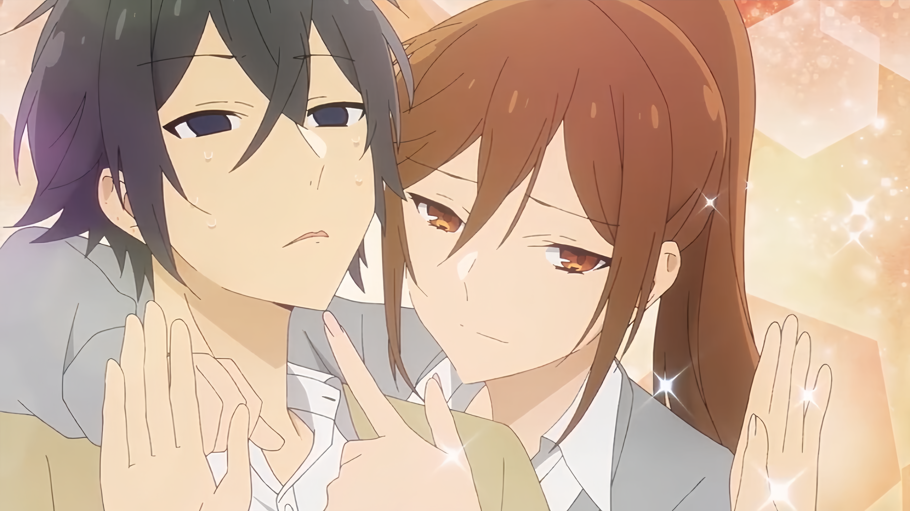
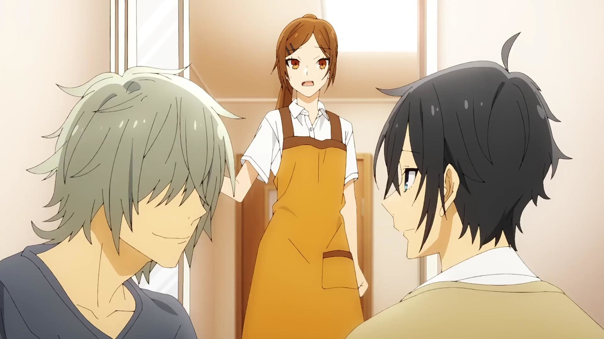
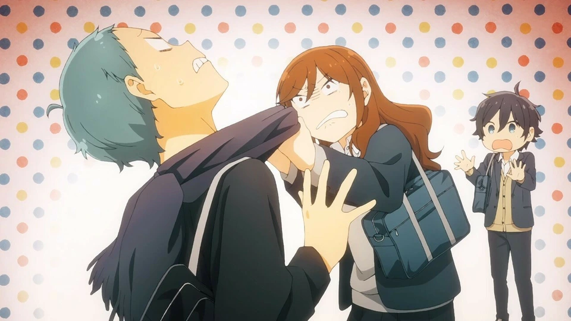
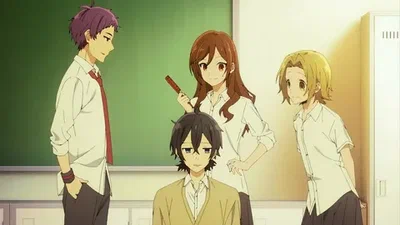
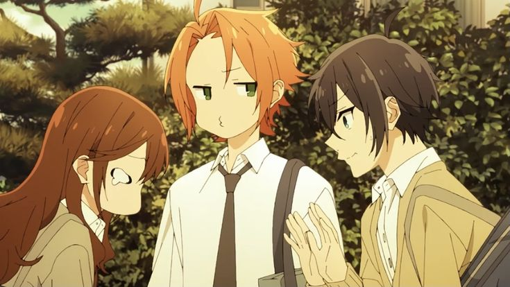
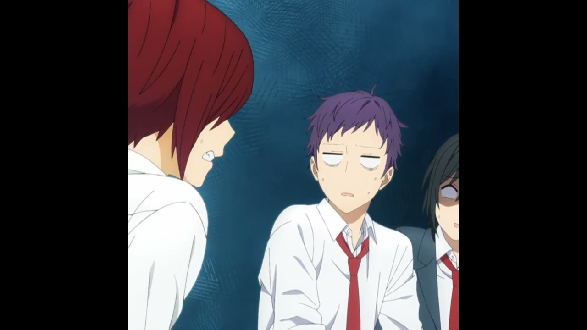
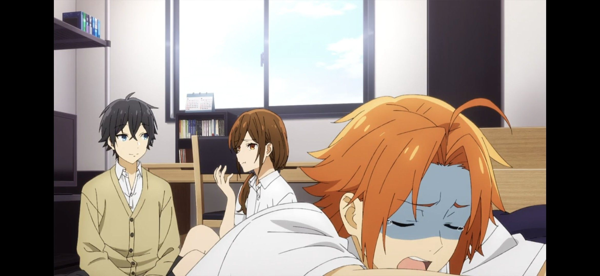
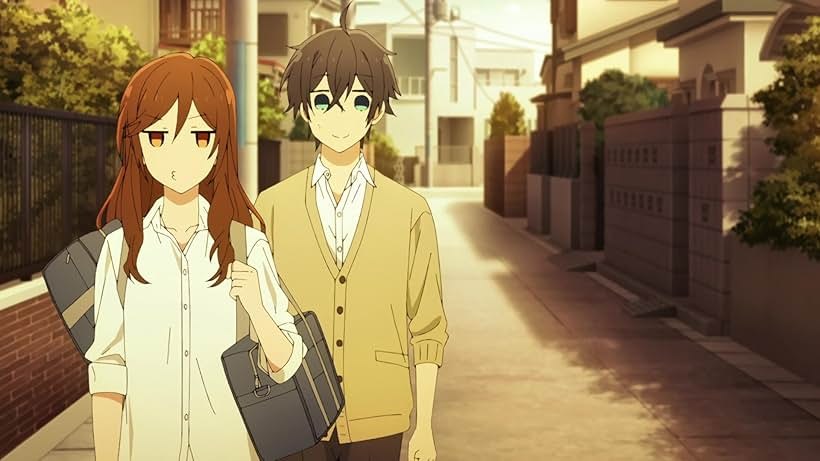
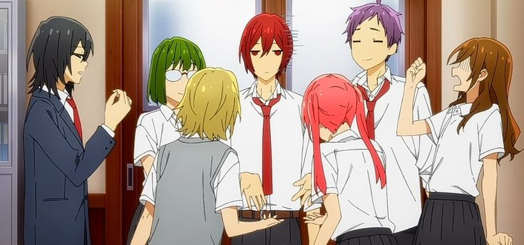
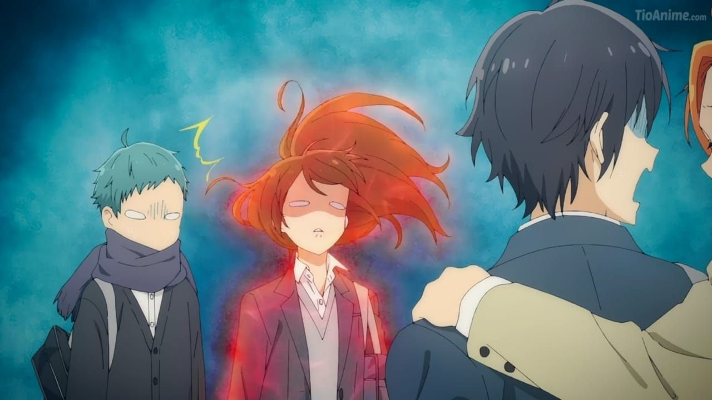
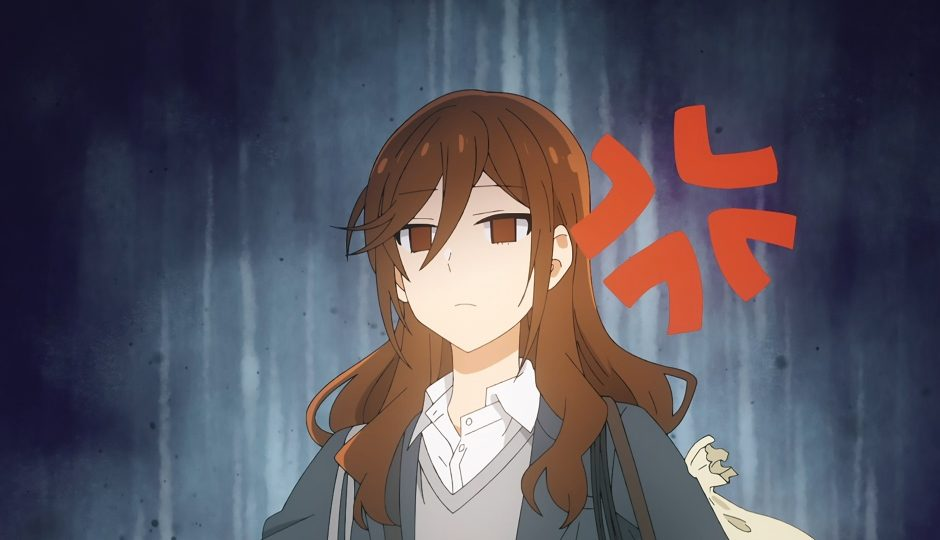
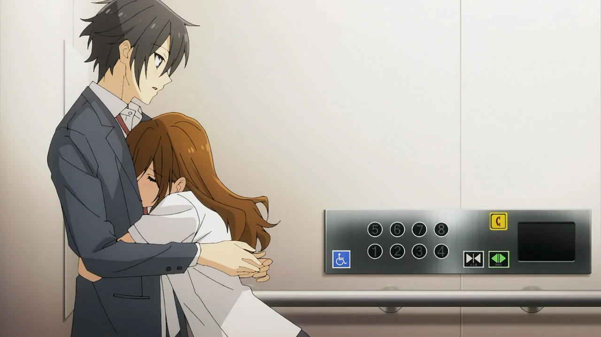
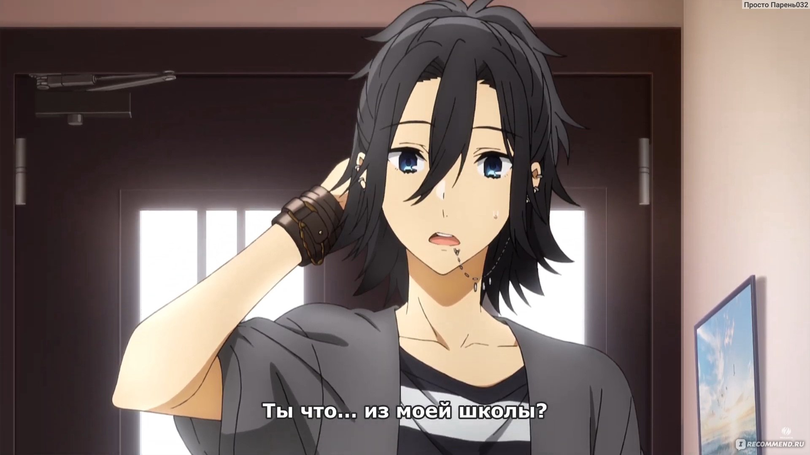
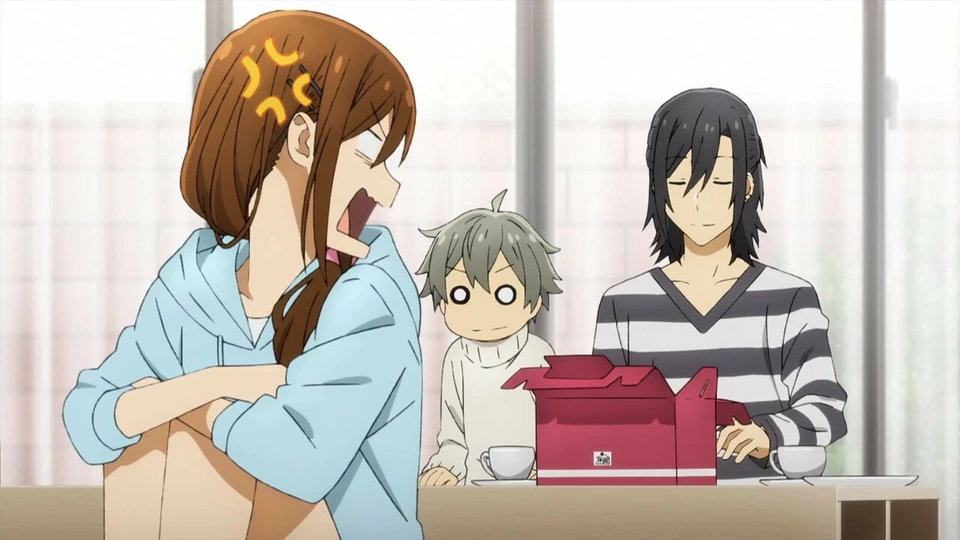
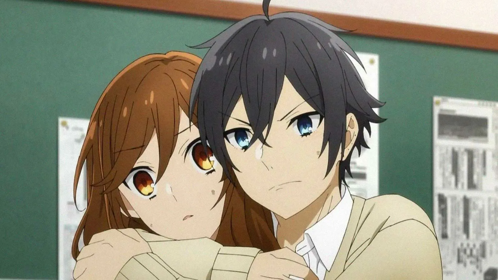